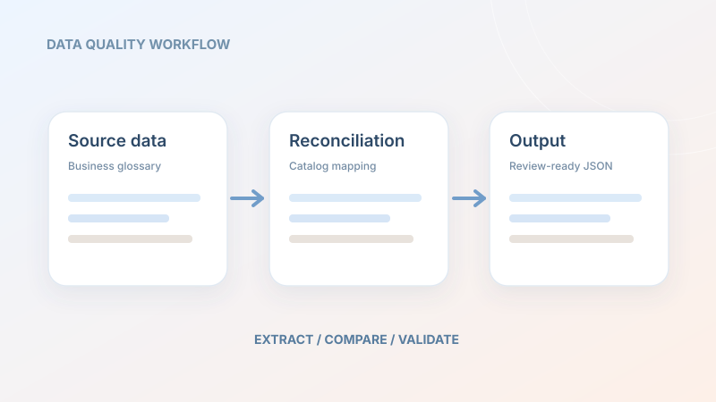

Building a clearer data dictionary
Developed Python tools to extract and standardize business-glossary data, reconcile customer terminology with an Axon catalog, and produce JSON outputs for review. Automated tests supported validation and developer checks.
What it demonstrates: data pipelines, mapping logic, quality checks, and clear handoffs.
PythonAxonData validationJSON
Internal internship work · illustrative workflow